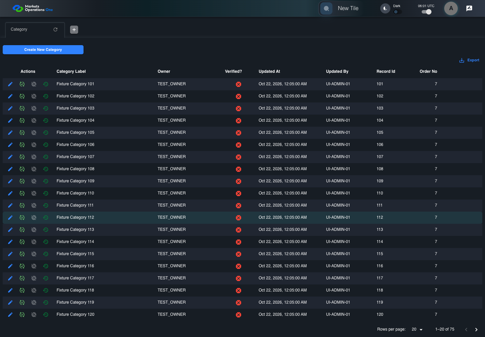
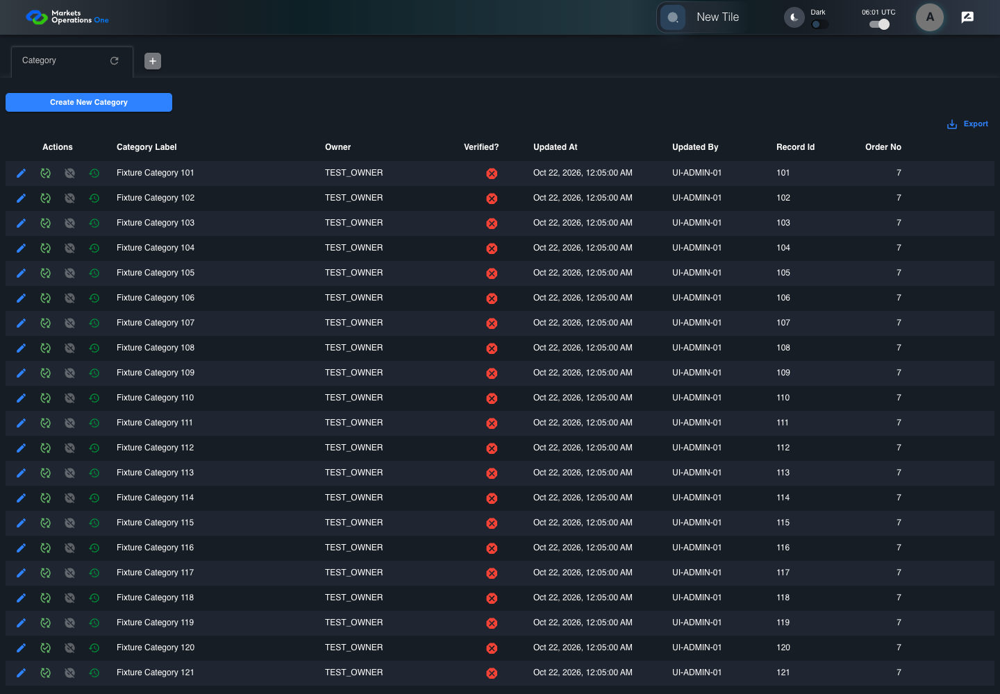

UI-ADM-GRD-002 actual administration UI with step evidence
PASS · application/run-050/ui-adm-grd-002-actual-administration-ui-with-step-evidence-6bdf4964e75d-attempt-1 · ACTUAL_APPLICATION_LOCAL_SERVICES
Actual current React administration screens. Controlled browser login supplies UI-ADMIN-01 and TEST_OWNER, or the declared SUPER_USER. Controlled BFF routes return the case-declared records. Other controlled saves persist submitted field values. This run establishes frontend handling only. It does not execute BFF validation, storage, audit generation, or authorization.
2026-10-22T06:01:12.024Z to 2026-10-22T06:01:15.568Z
Assertions and result · Artifact manifest · Exact run inputs and source hashes
Result SHA-256:cafa679aad77d0a688b65e27e9e4e53df0e4b5a188f7126451f0fa5b1e4b722eMachine observations
- source-resolved-pagination-target.json
bd00d64c9c98bc91cd674c4cfc03da34041849be06e9527c9dbe8bacaf8c0d88 - ui-origin-admin-requests.json
17e876217fd3157c7ad9c5701d0830cf8fa9a8148a5a268d1069af5e5f929f84
Screenshot capture: CAPTURED. Named frames: 6.
Step screenshot evidence: COMPLETE. 5/5 canonical steps have execution screenshots.
Canonical step timeline
Given Admin A is authenticated as fixture UI-ADMIN-01 with the case-specific permissions
Execution: PASSED.
1. step-01 Visible state after step 1: Given Admin A is authenticated as fixture UI-ADMIN-01 with the case-specific permissions
2026-10-22T06:01:13.426Z · 1440×1000
Step: /Users/lushevol/code/github/ratan-release-impact/workbench/tasks/ui-test-coverage-20261022/test-cases.md:9880
SHA-256:e2fecea69f4b5e4c51bcbaa02ec757835da891f94c1c5ab30ccdcdea7ec7548fAnd Category response contains 75 rows
Execution: PASSED.
2. step-02 Visible state after step 2: And Category response contains 75 rows
2026-10-22T06:01:14.370Z · 1440×1000
Step: /Users/lushevol/code/github/ratan-release-impact/workbench/tasks/ui-test-coverage-20261022/test-cases.md:9881
SHA-256:c968d9eee97794bbfa5e30f32baa18bc121a9b3afcf40e31b2807ebf9c579022When Admin A opens combobox with source identity "UNVERIFIED page-size target" inside the pagination footer of the Category administration data grid
Execution: PASSED.3. step-03 Visible state after step 3: When Admin A opens combobox with source identity "UNVERIFIED page-size target" inside the pagination footer of the Category administration data grid
2026-10-22T06:01:14.523Z · 1440×1000
Step: /Users/lushevol/code/github/ratan-release-impact/workbench/tasks/ui-test-coverage-20261022/test-cases.md:9882
SHA-256:513985983043fa1992af16f99d34d59d2aef61a4d19e9f8296241123cad388b1And Admin A clicks option named "50" inside the page-size popup for the Category administration data grid
Execution: PASSED.
4. step-04 Visible state after step 4: And Admin A clicks option named "50" inside the page-size popup for the Category administration data grid
2026-10-22T06:01:14.810Z · 1440×1000
Step: /Users/lushevol/code/github/ratan-release-impact/workbench/tasks/ui-test-coverage-20261022/test-cases.md:9883
SHA-256:041233c12427a503b8bdd487f18118080502cb220b6ac5feaae8d21d76ad1f64Then the current page of data grid with source identity "administration records" inside the "Category" administration tabpanel contains 50 data records
Execution: PASSED.
5. step-05 Visible state after step 5: Then the current page of data grid with source identity "administration records" inside the "Category" administration tabpanel contains 50 data records
2026-10-22T06:01:14.899Z · 1440×1000
Step: /Users/lushevol/code/github/ratan-release-impact/workbench/tasks/ui-test-coverage-20261022/test-cases.md:9884
SHA-256:b10f74d435560d487b2add4e92fa755e4f35d61c1938f3cb1186579b54ad0d17
Additional named frames
Screenshots establish visible state only. Assertions and traces support functional claims.